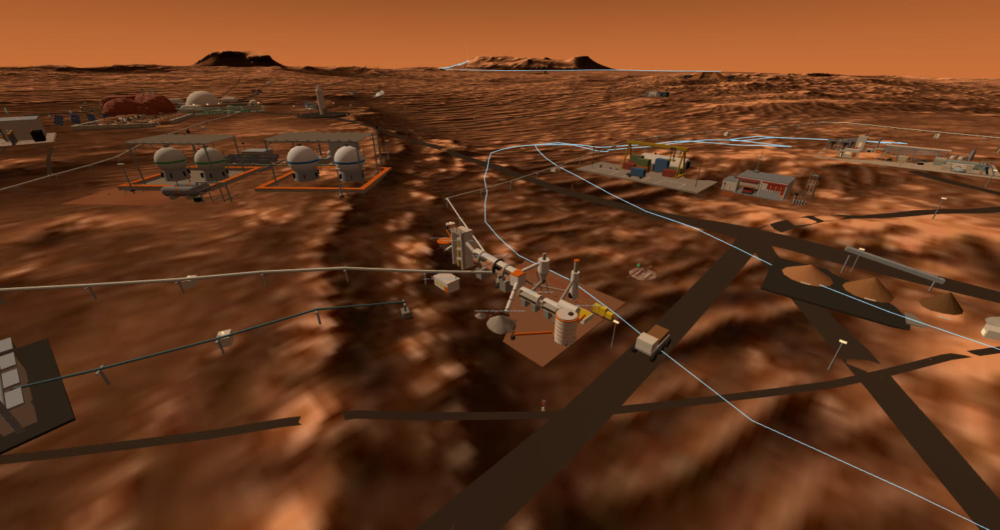

SULFUR · IRON · GLASS — THE INDUSTRIAL LOOP OF MARS CITY

The industrial quarter at 15:00 LTST — sulfur kiln line centre, cryogenic farm behind,
depot / fire station / glassworks on the east road, the ore hauler mid-cycle.
THE LOOPevery stream ends at another plant's intake — no stockpile is a graveyard
SULFUR WORKS res-sulfur-01 — the plant whose real product is oxygen
Rotary kiln1.3 m × 11 m, 900 °C, H₂ recirculated not consumed — hangs on fusion baseload, never cycled with the sun
Output100 kg/sol liquid S at 140 °C (the viscosity minimum) + 1.0 t/sol desulfurised tailings
Where it goesS binds 333 kg/sol of concrete; tailings return as print aggregate and shielding fill — one tonne in, no tonne wasted
FOUNDRY res-foundry-01 — "wait for Earth" becomes "wait for the shop"
ReductionH₂ shaft furnace at 900 °C (same regime as the kiln); FFC melt cells add 2 kg/sol Si + 0.5 kg/sol Ti
ShopLathe + mill to IT7, EBM printer ±0.2 mm — 33.6% of the 20 t/window spares stream made locally
ByproductEvery kg of Fe frees 0.2865 kg O₂ — 8.3 kg/sol joins the city oxygen ledger beside the sulfur plant's
GLASSWORKS res-glass-01 — black glass by the tonne, clear glass by the gram
Black lineBasalt fiber at 1450 °C + cast plate 120 kg/sol; pultruded rebar 1014 MPa — matrix is the sulfur next door, material flow 100% local
Float lineNatural thickness 11.2 mm vs 6.9 on Earth — the √g in the float equation is the poster physics of low gravity
Clear line1.9 kg/sol silica, selectively mined at 70% SiO₂ — windows local, telescope blanks stay imported, and the ledger says so